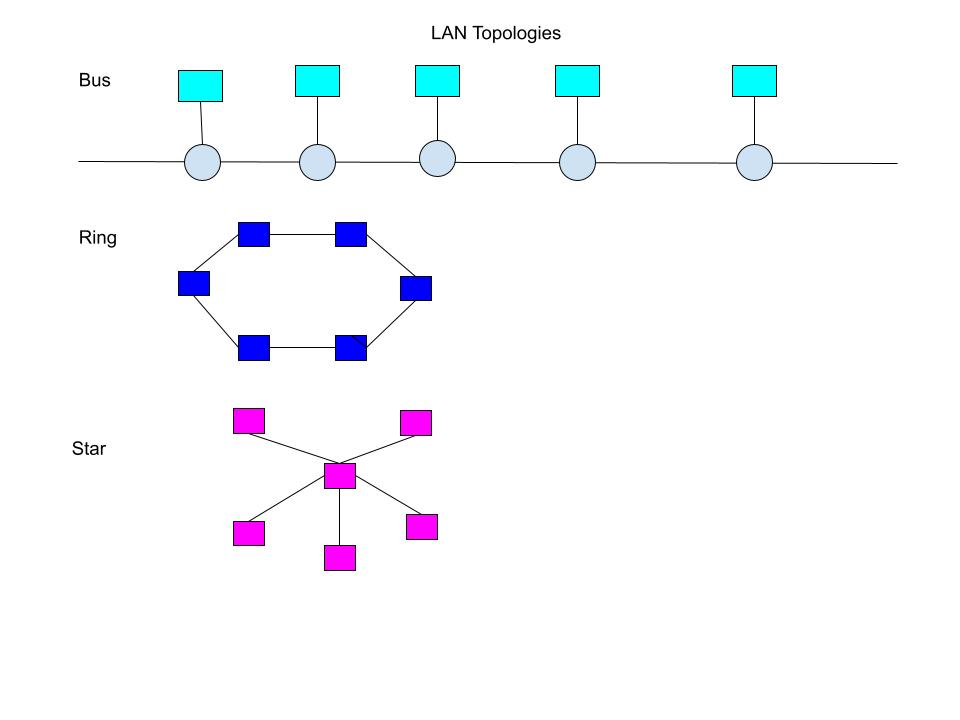

Chapter 7: Computer Networks & Cloud Computing
Student: Joseph Krantz
Briefly describe or define
- computer network- computers connected together for the purpose of sharing personal communications, hardware and software resources, and information
- analog device- the physical quantity used to represent information is continuous and can take on any value(switched dial-up telephone lines)
- digital device- transmits information as 0s and 1s(computers)
- modem- device that modulates or alters, a standard analog signal called a carrier so that it encodes binary information
- bandwith- rate at which information could be sent and received
- ethernet- most widely used broadband technology
- WLAN- a wireless network in which the user transmits from their computer to a local wireless base station that is < a few hundred feet away and is connected to a wired network
- IEEE 802.11 wireless network standard- another name for Wifi
- MAN- a network whose scope is larger that the few hundred feet of a LAN, typically a few blocks up to an entire city
- Internet of Things- everything has a digital device that can communicate
- LAN- network that connects hardware devices that are all in close proximity
- repeater- device that amplifes and forwards a signal
- bridge- has knowledge about the nodes located on each seperate network, examines every message to see if it should be forwarded from one network to another
- WAN- connects devices that are not in close proximity but rather are across town, the county, or the ocean
- packet and packet switching- information block with a fixed max size that is transmitted through the network as a single unit. used by WANs to deliver messages that "hop" from one node to another to make their way from source to destination
- ISP- business whose purpose is to provide access from a private network or from an individual's computer to the Internet
- firewall- software or hardware components that controls access from a network to a computer system
- protocal- a mutually agreed upon set of rules, conventions, and agreements for the efficient and orderly exchange of information
- Cloud Computing- a computing system in which the user can be completely unaware of where data is stored and where services are being provided
- net neutrality- the concept that a public information network such as an ISP should treat all users, all platforms, and all content equally
Briefly describe the five layers of TCP/IP:
- physical layer- governs the exchange of binary digits across a physical communication channel, such as fiber-optic cable, copper wire, or wireless radio channel
- data link layer- identifying the start and end of a message, determines whether a message did or didnt arrive correctly and if not getting a correct copy
- network layer- ensure that a message is delivered from the site where it was created to its ultimate destination
- transport layer- create a program to program delivery service, move messages from a specific program at the source to a specifi program at the destination
- application layer- the rules for implementing the end user services provied by a network
List and briefly describe at least 3 network services and benefits:
- Interpersonal communications- email, forums, texting, chat rooms
- Resource sharing- file servers, groupware, data warehouses
- Electronic commerce- use of computers and networking to support the paperless exchange of goods, information, and services
IEEE:
- What does the acronym, IEEE, stand for?
Institute of Electircal and Electronics Engineers
- What is the mission and vision of IEEE?
IEEE is dedicated to advancing technology for the benefit of humanity
- What are the benefits of IEEE membership?
access learning resources and career boosting opportunities for students and access into a global network of experts and stay at the forefront of technological advancement for professionals
- What are the requirements for IEEE student membership, and how much does undergraduate membership cost annually for students from the USA?
carry at least 50 percent of a full time accademic program in an IEEE designated field, $32 annual dues
